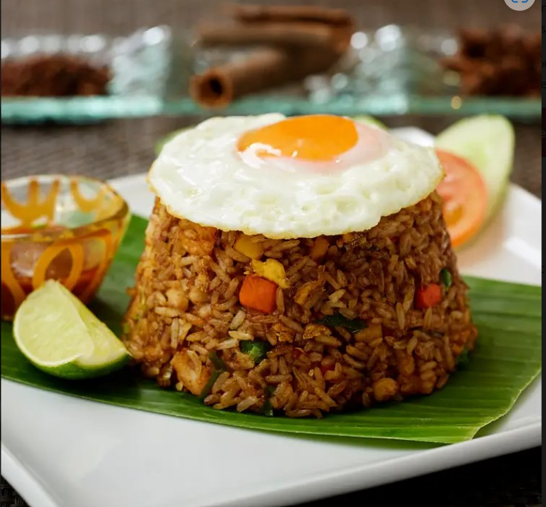

Nasi goreng adalah makanan favorit yang mudah dibuat dan sangat lezat. Bahan utamanya adalah nasi, kecap manis, bawang, dan telur.
Bahan-bahan:
- Nasi
- Kecap manis
- Bawang putih
- Bawang merah
- Telur
- Garam
- Lada
- Minyak
Cara Pembuatan:
- Panaskan minyak di wajan.
- Tumis bawang putih dan bawang merah hingga harum.
- Masukkan nasi, kecap manis, garam, dan lada.
- Aduk hingga merata dan tambahkan telur orak-arik.
- Sajikan dengan irisan timun dan tomat.